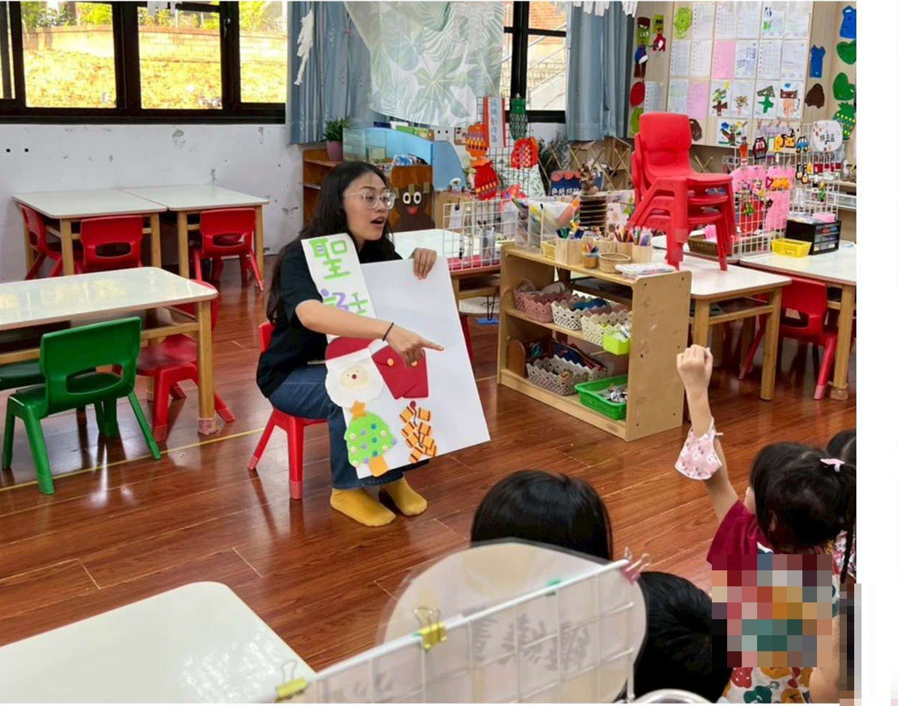
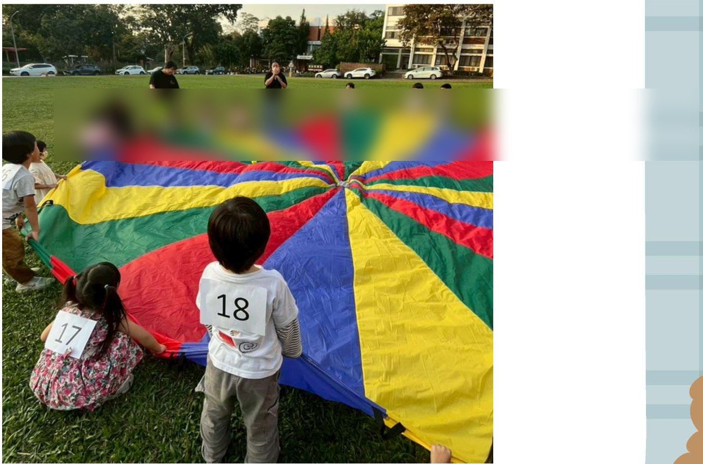
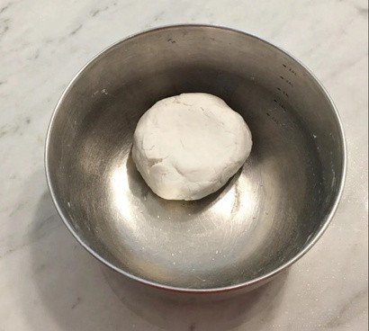
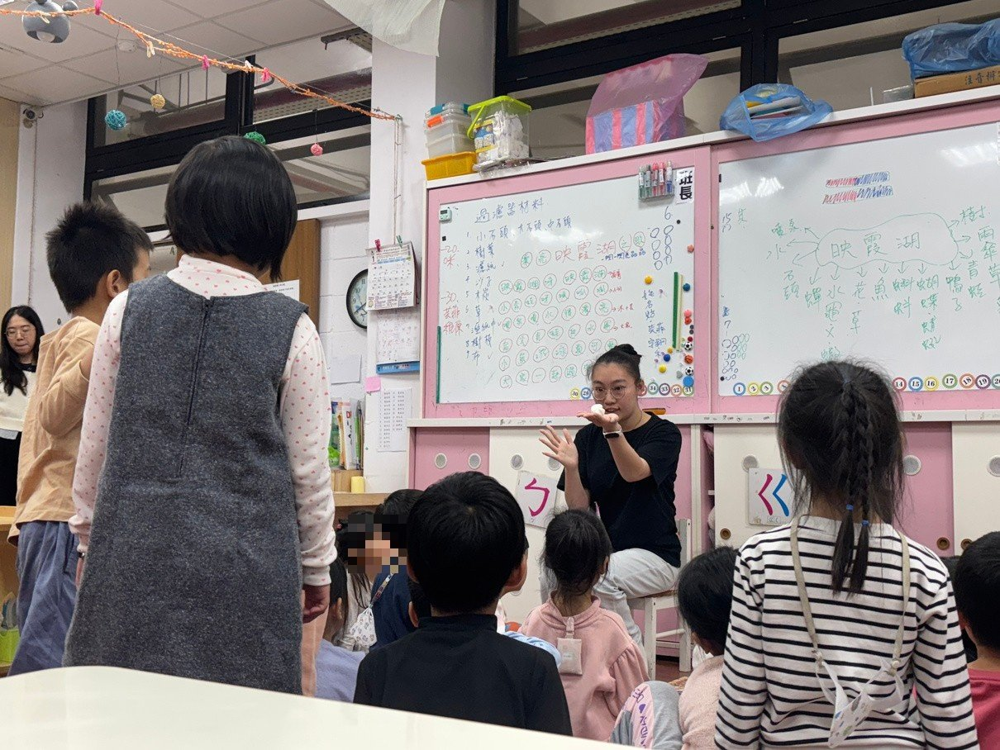
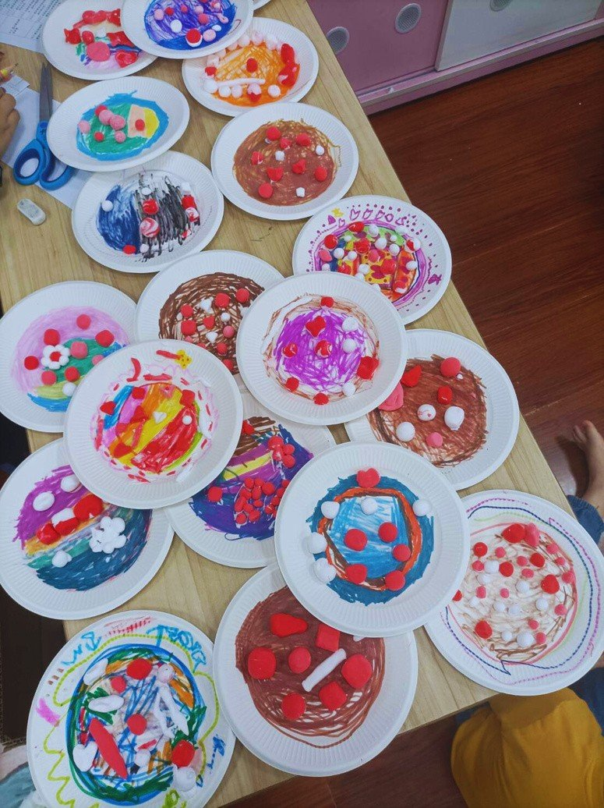

課程目標與學習指標
身-2-1 安全應用身體操控動作（身-大-2-1-1 在合作遊戲情境中練習動作的協調與敏捷）；社-1-6 認識生活環境中文化的多元現象（社-大-1-6-3）；語-2-2 以口語參與互動（語-大-2-2-3）；身-1-2 模仿各種用具的操作（身-1-2-2 覺察手眼協調的精細動作）
活動怎麼進行
第一場（12/1）｜氣球傘煮湯圓・戶外合作遊戲
朗讀繪本《王媽媽的狀元夢》認識冬至與湯圓由來，以主題板介紹冬季節慶與標誌性活動（聖誕節→聖誕老公公、過年→放鞭炮領紅包、冬至→吃湯圓）；移動到戶外草地，幼兒依氣球傘顏色分組站位，先隨音樂感受快慢節奏，再合力搖動氣球傘「煮湯圓」（小布球）；進階挑戰：老師說出想吃的湯圓數量，幼兒要合作把多餘的布球彈出傘外、留下指定數量。回教室分享：怎麼合作？遇到什麼困難？
第二場（12/15）｜搓湯圓・精細動作操作
閱讀繪本《阿英的冬至》認識冬至吃湯圓的習俗，展示一碗真實湯圓，並讓幼兒輪流觸摸糯米糰感受真實手感；幼兒先在紙盤上畫湯底圖案，經教師示範動作要領後依序搓出圓形→正方形→三角形，再自由創作完成個人湯圓作品盤；綜合活動分享：做的是什麼湯底？最會做什麼形狀？哪個形狀最難捏？
評量怎麼設計
- 第一場工具：屏科大幼兒園主題評量檢核表「冬天過什麼節」——五個評量項目（能與他人合作完成任務／能表達對生活經驗的感受與個人看法／能配合音樂或節奏調整肢體動作／能協調控制大肌肉完成肢體動作活動／能主動參與節慶的相關活動）；24 位幼兒分 3 組、每組 8 位由組員分工觀察，並在幼兒背後貼號碼，便於戶外活動中辨識與記錄。
- 第二場工具：檢核表＋作品雙軌——十項指標（能否將黏土揉軟／模仿教學者動作／搓成圓／搓成條／平均黏土／三角形／正方形／手眼協調不掉落／自由捏出其他形狀／遇到失敗能嘗試修正），每項以「完全不熟練／部分能達成／幾乎能達成／完全熟練」四級記錄；兩位主教之外的四位老師同步觀察，作品於活動後拍照存檔。
評量看見了什麼
- 戶外場：過半數幼兒五項皆能達成，屬高表現；較為特殊或內向的幼兒主要卡在口語表達與身體操作——大團體遊戲中的個別差異，靠分組分工觀察才看得見。
- 操作場的量化結果一目了然：「揉軟」「搓圓」「手眼協調不掉落」超過 20 位幼兒完全熟練；「三角形」最難——僅 5 位完全熟練、9 位部分達成。
- 「遇到失敗能嘗試修正」有 15 位完全熟練——檢核表把問題解決能力也納入了觀察。
第二場檢核結果：各項動作的熟練度分布（23 位幼兒）
完全不熟練部分能達成幾乎能達成完全熟練
教學現場的即時調整
- 氣球傘進階版「左右晃動」時發現部分幼兒左右概念尚不熟悉、無法統一動作——當場調整回「上下大力擺動」，再試一次就成功：形成性評量「當場發現、當場調整」的實例。
- 搓湯圓時發現幼兒共用材料產生爭執，即時介入協調，並反思應事先分配好每人份量；捏三角形普遍困難，教師多次示範並逐一巡視協助。
- 接近放學時段幼兒專注力下降，臨場改為一位代表分享，加快節奏。
這組的反思
- 戶外大型活動幼兒容易興奮，收束機制要事先設計；大團體觀察必須分組分工，否則記錄不過來。
- 「各完成三個指定形狀才能自由創作」的指令對幼兒太複雜——未來簡化為各完成一個，並增加分段示範與輔助教具。
- 分享時間要提前預留；可改「兩人一組快速分享」或舉手回答提高參與。
給現場老師的啟示
同一個冬至主題，兩種活動型態配兩種檢核表：戶外合作遊戲用五大項觀察＋分組分工，桌上精細操作用十項指標四級量化。工具的顆粒度跟著活動長相走——量化結果還能直接浮出下一步教學的優先順序：三角形要分段示範、材料要先分份、指令要簡化。
現場紀實









